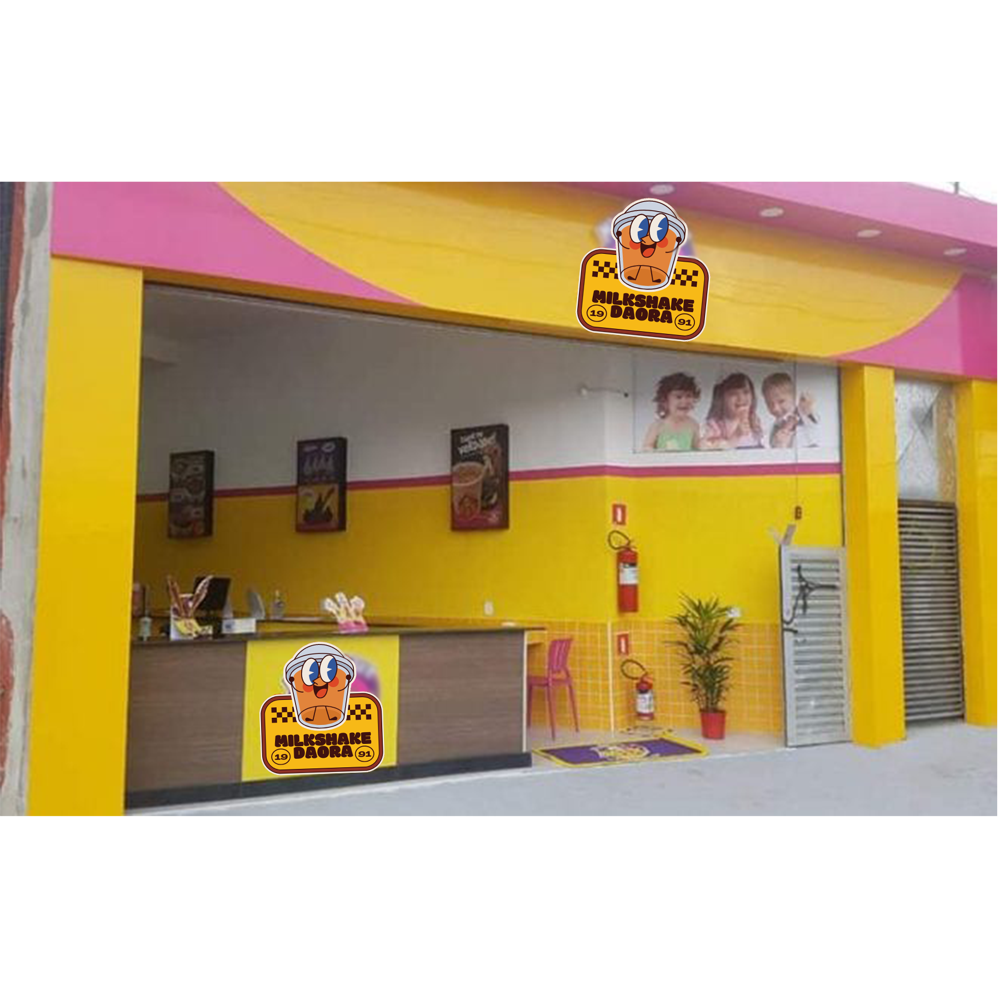

Sobre o MilkShake Daora
Faz um tempinho que a Milk Shake Daora abriu as portas e hoje vamos adoçar o seu dia com um pedacinho dessa marca que a cada dia mais vem ganhando muitos fãs.
Não se sabe ao certo a data do surgimento do milk-shake, mas a sua origem se deu de um tônico para doentes que consistia em leite, whisky e chocolate.
Posteriormente a bebida passou a ser produzida com xarope de chocolate, morango e baunilha e as pessoas pediam sorvete para acompanhar e o resultado foi tão bom que perdurou até os dias de hoje.
Depois de provar, modificar e gourmetizar, a Milk Shake Daora surgiu com milk-shakes especiais que adocicam o paladar e a vida de quem os saboreia.
Os milk-shakes das nossas lojas têm sabores diferenciados e autorais da marca que já ganharam a aprovação dos fãs.
